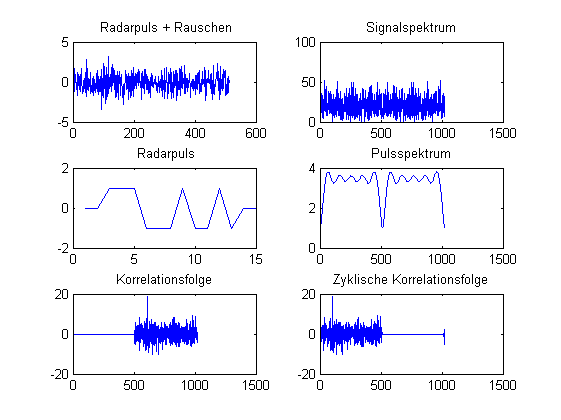

close all
clear
clc
WERTE =512;
x =randn(1,WERTE);
pulse = [ 0 0 1 1 1 -1 -1 -1 1 -1 -1 1 -1 0 0];
y = pulse;
x(100:114) = x(100:114) + 2 * pulse;
r_xy= xcorr(x,y);
X = fft(x,2* length(x) -1);
Y = fft(y,2* length(x) -1);
r_XY = real (ifft( X .* conj(Y)));
figure(1)
subplot(3,2,1)
plot(x)
title(' Radarpuls + Rauschen')
subplot(3,2,3)
plot(y)
title(' Radarpuls')
axis([0 15 -2 2])
subplot(3,2,2)
plot(abs(X))
title('Signalspektrum')
subplot(3,2,4)
plot(abs(Y))
title('Pulsspektrum')
subplot(3,2,5)
plot(r_xy)
title('Korrelationsfolge')
subplot(3,2,6)
plot(r_XY)
title('Zyklische Korrelationsfolge')
